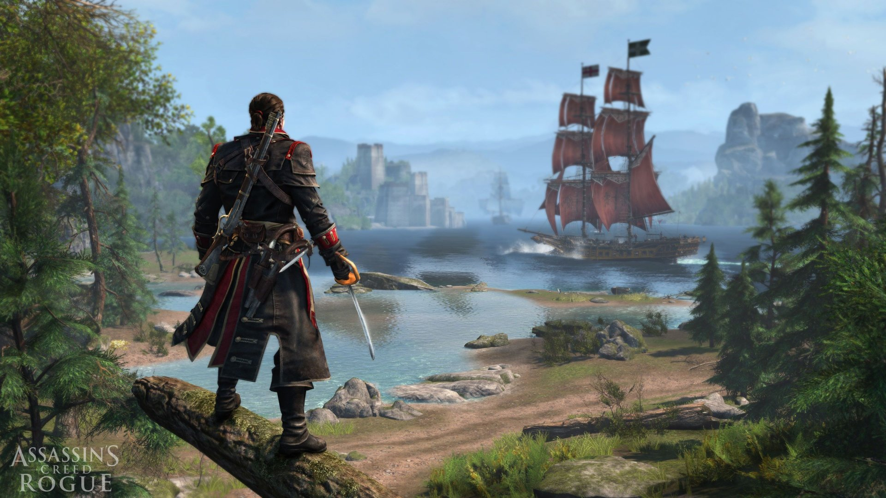

Assassin's Creed Rogue is a 2014 historical fiction action-adventure open world stealth video game developed by Ubisoft Sofia and published by Ubisoft. It is the eighth major installment in the Assassin's Creed series, and acts as a sequel to 2013's Assassin's Creed IV: Black Flag and a prequel to 2012's Assassin's Creed III with its final mission being the prologue to 2014's Assassin's Creed Unity. The game was first released on the Playstation 3 and Xbox 360 in November and December 2014, and will later be made available on Microsoft Windows in 2015.
The story is set in the mid-18th century during the French and Indian War, and follows a young Shay Patrick Cormac, an Assassin-turned-Templar. Gameplay in Rogue is identical to that of Black Flag with a mixture of ship-based naval exploration and third-person land-based exploration.

Shay Patrick Cormac
Shay Patrick Cormac (1731) was a member of the Templar Order, operating around the Atlantic Ocean during the Seven Years' War.
Formerly a member of the Colonial branch of the Assassin Brotherhood, Shay devoted his Templar career to hunting down his former associates. Aboard his ship, the Morrigan, Shay's travels brought him to New York and the Appalachian Mountains, among other locations.
Shay Patrick Cormac
● Born in New York to a modest family, Hope was placed in an orphanage after the death of her parents. She was subsequently adopted by a German couple, who hoped to build a new life for themselves in the colonies. They symbolized this desire by naming their newly-adopted daughter Hope. Although it took several years, the Jensens eventually grew wealthy, the business endeavors of Hope's father turning great profits, and began to mix with New York's finer circles. However, despite their best efforts to fit in, they were never truly accepted by the city's elite...For more visit the AC wiki
Trailer
Review
● History has always played a pivotal role in the Assassin’s Creed series. It serves as both inspiration and backdrop – a resource for dramatic events, supporting characters, and villains. Rogue is slightly different, though; it’s more concerned with examining the history of the series itself than exploring real-life events. The result is one of the most striking and intriguing stories seen in an Assassin's Creed game, but forgettable missions, an empty world, and lack of effort to put a new spin on how this long-running series plays and controls continually undermine its dramatic intentions.
Rogue’s greatest strength is its central character – Shay Patrick Cormac – and his journey from dutiful Assassin to vengeful Templar. Most of the trailers surrounding Rogue have portrayed Shay as a cold-blooded killer, but that’s in no way accurate; his story is nuanced, and the narrative is patiently unfolded. You play the first third or so of Rogue as an Assassin, which lets you forge relationships with those you will later hunt. There’s a good chunk of the 14-hour campaign where Shay doesn’t have any clear allegiances, and even then, he never really descends into brutal killer territory. There’s always a sympathetic motivation to be found; it’s all much more nuanced and ambiguous than I was expecting, and it makes for the most engaging story in an Assassin’s Creed game since the days of Ezio Auditore da Firenze.